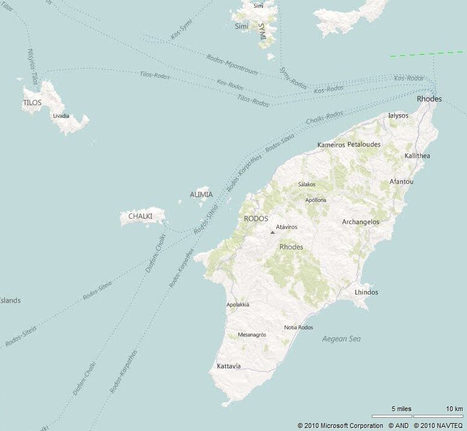
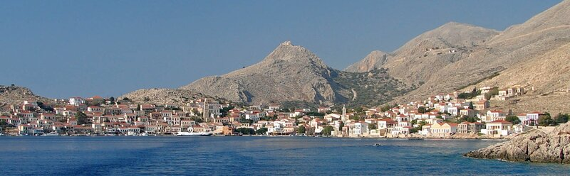
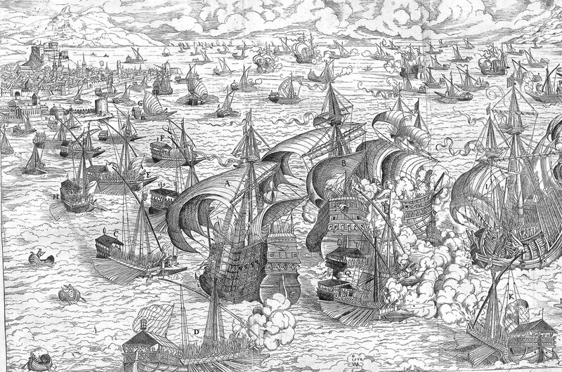

Мне не приходилось встречать перевода рукописи Ахмеда Хафуза на русский язык, поэтому если у кого-то возникают сомнения в правильности использования терминов или имен – готов смиренно выслушать замечания.
Продолжим, обратившись теперь к той части манускрипта, где говорится о передвижении турецкой сухопутной армии.
«Во время передвижения доблестного флота, божественный султан сам лично покинул Стамбул 18 раджаба того же 928 г.х. (13 июня 1522 г.) и стал во главе сухопутной армии, находящейся в готовности в Ускюдаре… После некоторого времени, потраченного на обед в этом городе, он призвал каймакана Стамбула и в присутствии Аги (начальника) янычар, улемов и других начальников наградил праздничными одеждами и лошадьми, поручив строго следить за регулярной отправкой предметов военного снабжения, а также за тем, чтобы бедным подданным не было причинено никакого ущерба, всегда поступая с ними по закону. Все присутствующие пали ниц и со слезами на глазах обещали в точности исполнить этот высочайший приказ. Переодевшись затем в богатые одежды, щедрый дар их Господина, они обратили к небесам молитвы об успехе этого предприятия, после чего испросив разрешения султана вернулись в Стамбул.»
«Покинув Ускюдар, великолепный султан 7 шаабана (2 июля) прибыл в Кютахью, откуда он направился в Енишехир, где, согласно его ранее отданному приказу должны были сосредоточиться различные части его армии; и действительно, вся долина и прилегающие горы были заполнены тысячами воинов, прибывших из различных частей страны, которые находились здесь уже три дня на отдыхе.»
Вернемся вновь к турецкому флоту.
«Тем временем благородный визир Мустафа Паша, следуя на всех парусах, днем и ночью, прибыл со всем флотом Империи к острову Хальки, на котором размещалась крепость неверных.»

Ниже приведен современный вид на о. Хальки. На холме видны руины старой крепости.

“Мустафа Паша приказал капитану Кара Махмуду, который уже участвовал в боях с неверными и брал множество пленных, которым отрезал головы и вырывал сердца, взять эту крепость. На нескольких галерах и в сопровождении храбрых мусульман капитан подошел к острову и потребовал сдать крепость. Но неверные, их которых состоял гарнизон, отказались сдаться, демонстрируя свои враждебные намерения. В конце концов воины Ислама смогли одержать верх в штурме 20 шаабана (15 июля) и водрузили над крепостью свое знамя.»
“Тем временем благородный визир со всеми своими кораблями, которые взбирались на волны как дикие звери на горы, воспользовавшись благоприятным ветром, занял все пространство вокруг острова.

Можно было видеть 700 кораблей всех размеров, гордо следовавших за благородным визиром, который приказал Йени Мустафа Бею поднять прекрасное знамя Ислама и пойти с десятью галерами на разведку к крепости Родос.»
«Увидев эти силы, неверные объявили тревогу и вывели из порта свои галеры; но благородный Паша, заметив это движение, поднял на золоченой корме своей галеры три позолоченных фонаря, вышел вперед и направился в Родосский пролив навстречу флоту неверных. Остальной флот Империи последовал за ним в строгом порядке, как журавли следую за своим вожаком; неверные вынуждены были ретироваться в порт. Пройдя по проливу, великий визир вместе с флотом встал на якорь напротив местечка, которое называется Вилланова. Собрав совет, он сообщил, что о прибытии флота Империи стало известно неверным, и они вне всякого сомнения приняли необходимые меры по противодействию , поэтому он предлагает оставить здесь несколько кораблей для отвлекающих действий, а с остальным флотом сменить место якорной стоянки. В соответствии с этим советом 200 кораблей, мавн, галер и барж остались на якорной стоянке в Вилланова, в то время как благородный Паша, сопровождаемый Куртоглу, вернулся в пролив с остальным флотом. Корабли были украшены на мачтах, на носу и на корме османскими знаменами, увенчанными золочеными шарами, которые сверкали на солнце. Они продвигались подивизионно, имея на борту победоносных воинов Ислама, вооруженных как львы и готовых ко всем неожиданностям.»